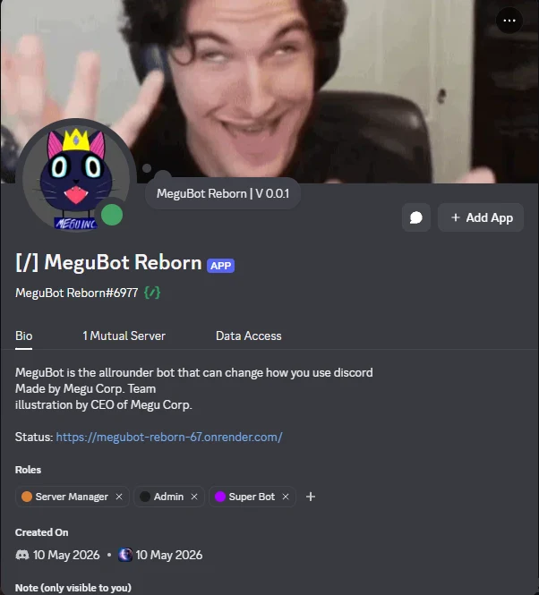
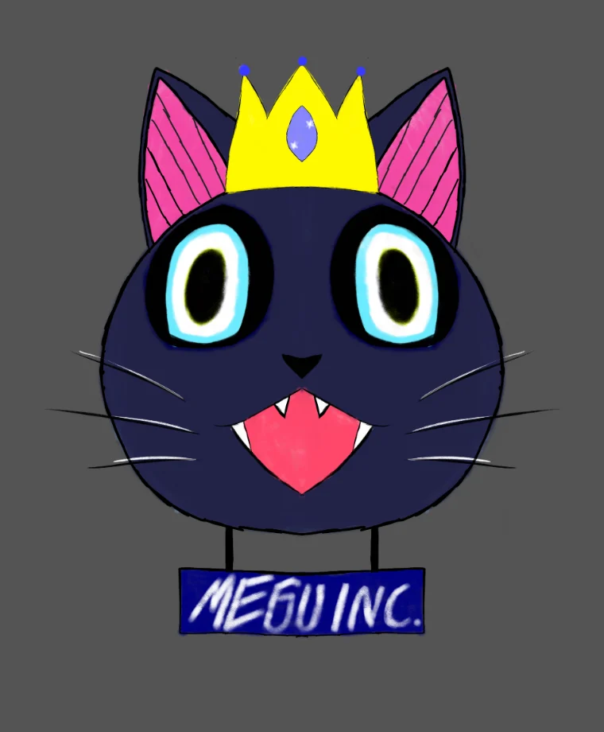
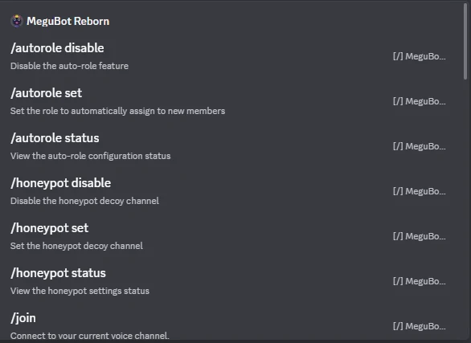
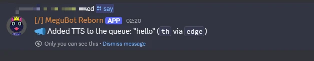
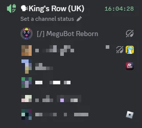

Case study · side project with a friend · ongoing
The project where I was
the analyst, not the developer
MeguBot is an all-round quality-of-life bot for Discord that my friend and I keep running for our own server, and that people there use every day. I designed how it behaves — the flows, the features, the decisions about what it should and should not do. My friend wrote the code. Putting it in this portfolio only makes sense if that split is the first thing you read.

are mine
I did not write it
onto a cloud host
not a demo
one designs, one builds
01 — My role, stated plainly
I was the one deciding what it should do and why
On the other three projects in this portfolio I designed the system and then built it. Here I only did the first half — and that half is the work I actually want to do for a living, so it is worth showing on its own.
The thinking
What the bot is for, which features earn their place, how each one should behave, what the command should feel like to use, what happens in the awkward cases, and what we deliberately leave out. Most of the feature ideas started as mine.
The implementation
My friend wrote every line of the bot. I handed over intent and reasoning, he turned it into working commands, and we went back and forth when reality disagreed with the plan.

This is the closest thing I have to the job I am applying for: someone hands the developer a clear picture of what to build and why, stays available while it is built, and takes responsibility when the design turns out to be wrong. The difference from a course project is that there was no brief — the requirements came from watching how our own server actually behaves.
02 — Why it exists
Small frictions, every single day
Nothing here is a grand problem. It is a pile of small ones that a group of friends hits constantly while playing together, and each one is worth a few seconds of everybody's attention.
You cannot see who just walked in
When you are in a game full-screen, someone joining or leaving the voice channel is invisible. The bot says it out loud.
Not everyone can talk
Some people have no microphone, some just do not want to speak. Typing works — but the people in the game are not reading chat.
Somebody has to start the bot
Run it on a laptop and the bot is only alive while that laptop is. That is a design problem, not an inconvenience.
03 — What it does
One bot instead of five
The design goal was deliberately unfashionable: rather than adding five single-purpose bots to the server, put everything the group actually uses into one, and keep every command shaped the same way.
- Text to speech — anyone without a mic, or who would rather not talk, types and the bot says it in the channel. This is the feature the group leans on most
- Voice channel announcements — the bot speaks who joined and who left, so nobody has to alt-tab to find out
- Custom names — per-person names the bot uses when it speaks, set per server, because Discord display names are not what friends actually call each other
- Auto-role — new members get their role assigned on arrival instead of waiting for an admin to notice them
- Honeypot channel — a decoy channel that catches spam accounts before they reach a real one. The idea is old; putting it in a friends' server bot is the part I like
- Sound and music playback — queued audio in the voice channel
- Utility commands — the small stuff that keeps a server tidy
There are also small games — a fishing game you can idle in, a farming game — but they live in the older build and have not been moved onto the version running in the cloud yet, so there are no screenshots of them here.

disable,
set, status. That consistency was a design rule, not an accident

04 — Decisions I drove
The two that changed what the bot is
Stop hosting it on somebody's computer
While the bot ran locally it was only up when one of us remembered to start it, which quietly capped how much anyone relied on it — you do not build a habit around something that is usually offline. Moving it onto a cloud host (it runs on Render now) was the change that turned it from a toy into part of the server.
Admit that the bot is built for us, not for everyone
Right now the wording, the jokes and most of the behaviour are tuned to our group. Only a few things — the names it calls people, for instance — differ per server. That is fine while we are the only users and completely wrong the moment anyone else adds it, which is what the next step is about.
05 — What is next
A web panel, so each server can make it theirs
Planned, not built. I am writing it here as a plan rather than an achievement.
- The idea
- A website where a server owner signs in with Discord and configures the bot for their server: which features are on, what the bot says, the names it uses.
- Why it matters
- It is the difference between a bot our friends use and a bot anyone can use. The design work is the interesting part: deciding what should be configurable and what should stay fixed, because a settings page with everything on it is its own kind of broken.
- The unknown
- It has to talk to Discord's own API for authentication and server data, and I have not proven that end of it yet. Until I have, this stays on the plan, not on the list of things I have done.
06 — Straight talk
Things worth saying plainly
- I did not write this code — my friend did, and the repository is his. What is mine is the system design, the feature set and the reasoning behind both
- It is a side project for our own server — no client, no brief, no deadline. The requirements came from watching how we actually use Discord
- It is still changing — the copy on my own machine is already behind what is running, which is why there are no line counts or command counts on this page, and why the games are described but not shown
- The screenshots are from our own server — everyone else's name and avatar is pixelated. They are not part of my job application